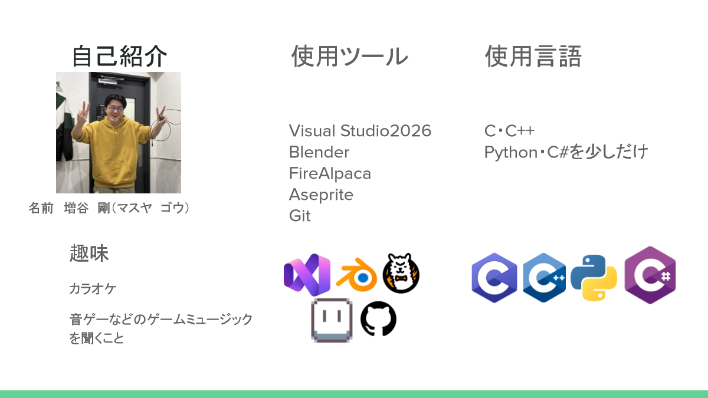
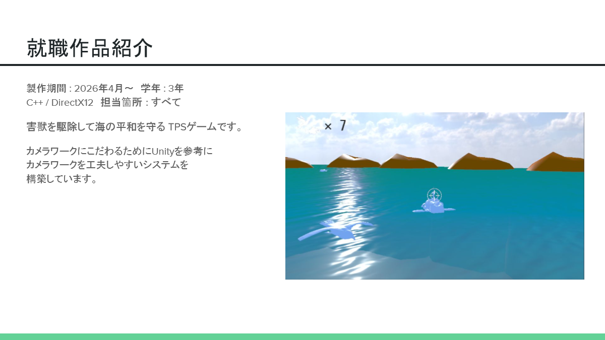
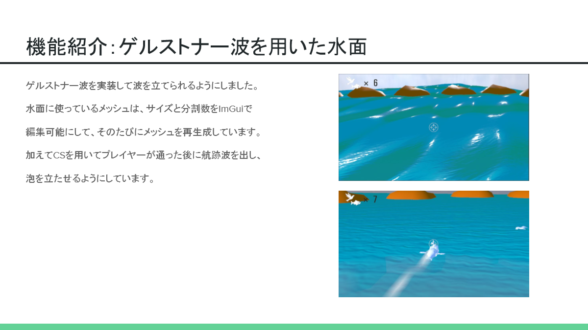
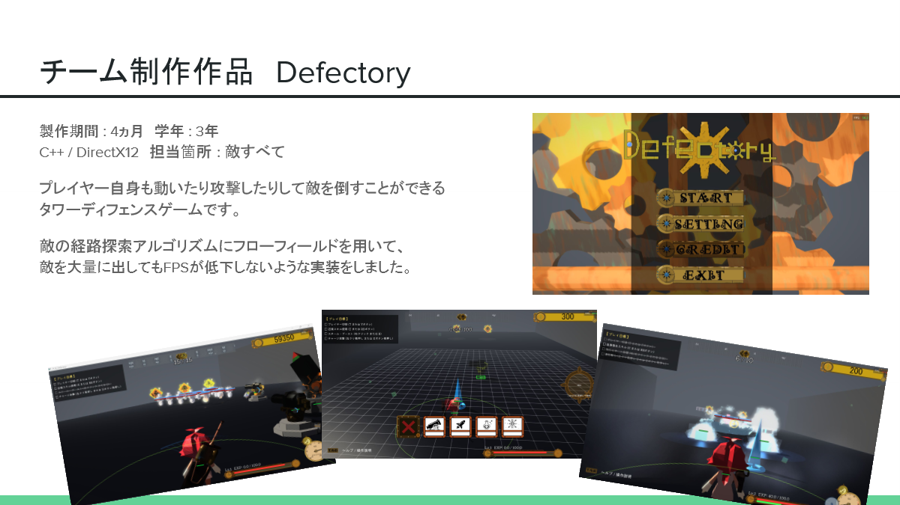
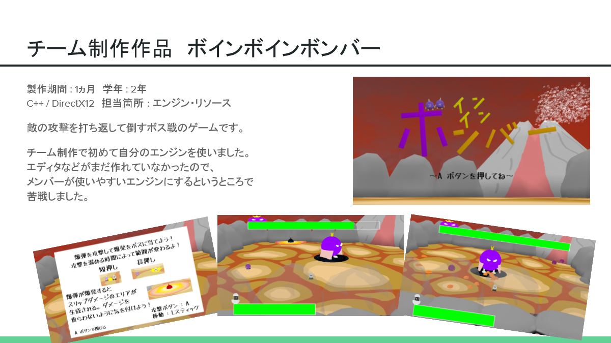
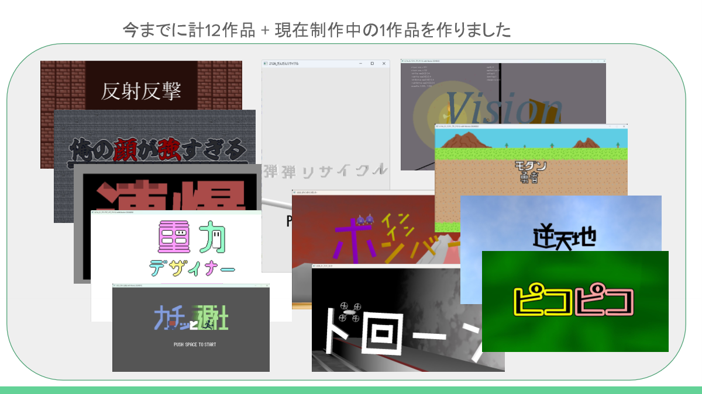
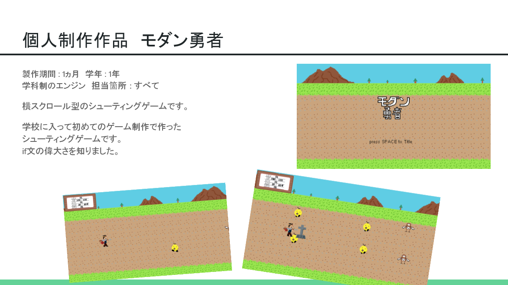

自己紹介

増谷 剛（マスヤ ゴウ / Go Masuya）
ゲームプログラマーを目指してC++およびDirectX 12による自作ゲームエンジン「MagosuyaEngine」の開発や、チーム制作・個人制作に取り組んでいます。これまでに計12作品 ＋ 現在制作中の1作品を制作してきました。
スキル・使用言語
- 主要言語: C / C++
- その他言語: Python, C#（基礎）
使用ツール・環境
- IDE / バージョン管理: Visual Studio 2026, Git / GitHub
- グラフィック / 3D: Blender, FireAlpaca, Aseprite
趣味
カラオケ、音ゲーなどのゲームミュージックを聴くこと。
就職作品（TPSアクション）
とりうおハント！
害獣を駆除して海の平和を守る TPSゲーム
プレイ動画

| 製作期間 |
2026年4月〜 |
学年 |
3年 |
| 使用技術 |
C++ / DirectX 12（自作エンジン） |
担当箇所 |
すべて（ソロ制作） |
広大な海を舞台に、害獣を駆除しながら海の平和を守る三人称視点（TPS）アクションゲームです。カメラワークと水面シェーダーの表現に徹底してこだわって開発しています。
こだわりポイント 1：Unityを参考にした柔軟なカメラワークシステム
プレイヤーの臨場感やアクションの迫力を引き出すため、Unityのカメラ機構を参考に、自作エンジン内でカメラワークを直感的に工夫・構築できる制御システムを実装しました。
こだわりポイント 2：ゲルストナー波を用いたリアルな水面 & 航跡波

- ゲルストナー波（Gerstner Wave）の実装: 自然な海のうねりや尖った波頭を物理アルゴリズムでリアルタイム計算して再現。
- ImGuiによるメッシュ動的生成: 水面メッシュのサイズや分割数をImGuiからリアルタイムにパラメータ調整でき、その場でメッシュを動的再生成する仕組みを構築。
- コンピュートシェーダー（CS）による航跡波・泡表現: プレイヤーが水面を航行した軌跡をコンピュートシェーダーで追跡し、通過後に白い航跡波と泡が立つ演出をGPU上で高速処理。
チーム制作作品
1. Defectory（タワーディフェンス）
プレイ動画

| 製作期間 |
4ヵ月 |
学年 |
3年 |
| 使用技術 |
C++ / DirectX 12 |
担当箇所 |
敵の挙動・システムすべて |
プレイヤー自身もフィールドを自由に駆け巡り、攻撃を繰り出して敵を撃退できるアクティブなタワーディフェンスゲームです。
技術的アピールポイント：フローフィールドによる高負荷対策
敵の経路探索アルゴリズムに「フローフィールド（Flow Field）」を採用。従来のA*（A-star）探索では難しかった「大量の敵ユニットが同時に出現するシチュエーション」でも、処理落ち（FPS低下）を起こさずにスムーズな追尾挙動を実現しました。
2. ボインボインボンバー（ボス戦アクション）

| 製作期間 |
1ヵ月 |
学年 |
2年 |
| 使用技術 |
C++ / DirectX 12 |
担当箇所 |
エンジン基盤・リソース管理 |
ボスの放つ攻撃をタイミングよく跳ね返し、ダメージを与えて倒す白熱のボスバトルアクションゲームです。
自作エンジン（MagosuyaEngine）をチーム制作に初導入
チーム制作で初めて自身の自作エンジンをプロジェクトの共通基盤として採用しました。当時はGUIエディタがまだ整っていなかったため、チームメンバーがリソース配置やプログラミングをスムーズに行えるようなAPI設計やエンジン構造の整備に苦戦しながらも、ゲームの完成まで支え抜きました。
その他作品・開発実績

これまでに計12作品 ＋ 現在制作中の1作品を制作！ジャンルを問わず様々なゲームロジック・グラフィック技法に挑戦してきました。
過去の制作タイトル例
- 反射反撃
- 俺の顔が強すぎる
- 弾弾リサイクル
- 重力デザイナー
- カチ避
- ドローン
- ピコピコ
- 逆天地
- Vision
原点の作品：モダン勇者（横スクロールシューティング）
プレイ動画

| 製作期間 |
1ヵ月 |
学年 |
1年 |
| 使用技術 |
学科制エンジン |
担当箇所 |
すべて |
学校に入学して初めてのゲーム制作で作った横スクロール型シューティングゲームです。プログラミングの基礎と向き合い、条件分岐やゲームループの基礎を身につけ、「if文の偉大さ」を実感した、クリエイターとしての原点となる作品です。
Contact
ポートフォリオをご覧いただきありがとうございます！ご連絡やフィードバック等は下記フォームまたは各リンクよりお願いいたします。